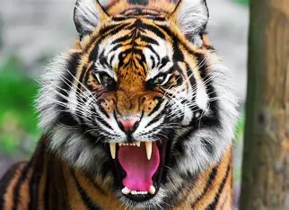
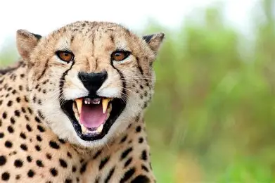

| LEON |
- Fuerza y capacidad de caza: musculoso y potente, con mordida y garras diseñadas para abatir presas grandes.
- Comportamiento social: vive en manadas organizadas con roles cooperativos en la caza y la protección.
- Apariencia distintiva: los machos suelen tener melena amplia; pelaje corto y color dorado que camufla en la sabana.
|
|
| TIGRE |
- Fuerza y capacidad de caza: musculoso y potente, con mordida y garras diseñadas para abatir presas grandes.
- Comportamiento social: vive en solitario o en parejas, con una estructura social menos organizada que el león.
- Apariencia distintiva: pelaje anaranjado con rayas negras que camufla en la selva.
|
 |
| GEPARDO |
- Velocidad máxima: puede alcanzar 100 a 120 km/h en sprints cortos.
- Anatomía especializada: cuerpo ligero, columna muy flexible y cola larga para balance y aceleración.
- Patrón y marcas faciales: pelaje con manchas para camuflaje y las distintivas “líneas de lágrima” junto a los ojos.
|
 |